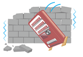
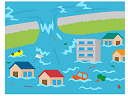
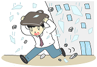
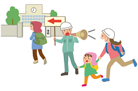

地震発生 - 屋外 -

緊急地震速報が鳴り出したら
  ビル外壁、看板、ブロック塀、自動販売機、路地、川、海など危険な場所からできるだけ距離を取ってください。 近くに堅牢なビルがある場合は、そのエントランス内に避難するなども有効です。身の安全を確保する
 クッションやカバン等で頭部守る、柱につかまるなど、当面の安全を確保してください。 車道に飛び出したり、階段などの段差付近にいるなども大変危険ですので、避けてください。揺れが収まったら
 その場に留まるべきか、帰宅すべきか、会社へ行くべきか、避難所や公園・学校などの広い場所へ避難すべきか、その場の状況に応じた判断が必要です。 必要であれば、家族、上司などと相談してください。津波について
海の近くや低い土地では、地震の後、津波の恐れがあるかもしれません。情報を収集し、必要であれば垂直(高い場所へ)避難してください。